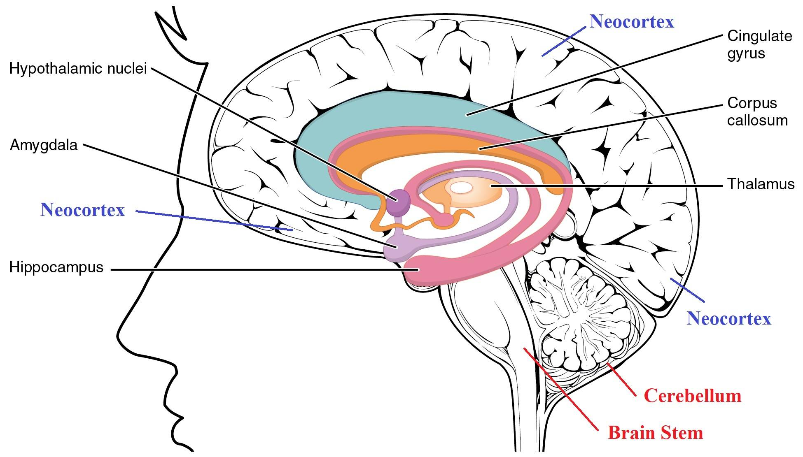
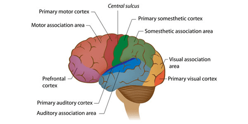

Patient H.M. provided a critical clue to the role of the hippocampus in memory preservation. Studies on him and a few other patients point to direct and indirect roles played by the brain in preserving memories. The Buddhist and scientific descriptions are the same for habitual (procedural) memory but different for autobiographical (declarative) memory.
Major Components of the Brain
1. The following diagram shows the brain divided into three regions. The following bullet points provide the KEY FUNCTIONS of each area. It is a crude description but provides a simple picture.

The cerebellum(indicated in red) controls body movements. The cerebellum also helps with body balance and remembering repetitive tasks. If there is significant damage to the brain stem, one is likely to die. The brain stem controls vital functions like breathing.
The limbic system plays a vital role in memory. It also deals with emotions. Components of the limbic system are indicated in black.
The neocortex(indicated in blue) is the largest area of the brain and manages sensory inputssuch as vision and hearing. It is also the "thinking brain." It wraps around the limbic system, starting from the edge of the cerebellum.
Structural Information on the Three Regions of the Brain
2. The above figure shows a brain cut in the middle. Some components of the limbic system have two parts on either side. For example, the hippocampus and amygdala have two identical structures on the brain's left and right sides.
On the other hand, the brain stem and cerebellum are single structures.
In contrast to both, the neocortex has different areas specialized for various tasks. Analysis of sensory inputs happens in the back (visual and auditory cortex.) Parts of the frontal cortex manage planning, speech, and related motor control aspects. The neocortex accounts for 76% of the brain.
Overview of Our Discussion So Far
3. Now, we can better visualize our discussion so far in the previous few posts, especially the post on "Persistent Vegetative State – Buddhist View." Let us first go over that post.
The brain stem regulates breathing, heart rate, and blood pressure. Therefore, it is likely that people in vegetative states do not have significant damage to their brain stems.

The loss of motor control (body movements) is likely due to damage to the cerebellum.
The visual and auditory cortexes are close to the cerebellum (left figure). Click to download the figure: "Neocortex Areas and Cerebellum." The limbic system is hidden in this view.
That roughly matches what we discussed in the previous post about different situations of people in vegetative states. For example, suppose there is damage to the cerebellum area but minimal damage to the visual/auditory cortexes. Such patients may be able to see/hear but not be able to respond.
On the other hand, if the visual/auditory cortexes and the cerebellum are damaged, the patients will not be able to see or hear as well.
We discussed those two situations in the previous post.
The Opposite of a “Vegetative State” - Living Without Memory
4. Now, let us discuss a few people who were unfortunate to face different problems due to a third region of the brain located close to the middle of the brain. As we can see from the first figure above, the limbic system lies underneath the neocortex and sits above the brain stem/cerebellum area.
The limbic system is the "emotional center" of the brain because it controls emotions. It has several components, including the hippocampus, amygdala, and thalamus.
Our focus here is on the hippocampus. As we will see, it plays a significant role in memory.
There are two symmetrically-placed hippocampi on either side of the brain. Surgeons removed both of them in a patient who went by the name "patient H.M."
The account of "Patient H.M." - Critical Role of Hippocampus
5. Patient H.M. (or Henry Molaison) suffered from frequent bouts of seizures. In 1953, a surgeon removed both his hippocampi in an attempt to solve that problem. Even though the episodes went away, HM suffered a devastating memory loss.
HM lost the ability to retain NEW memories. But he could remember events up to the operation but could not remember anything for more than a few minutes AFTER the operation. The following video explains it in more detail.
After extensive studies on patient HM (he died in 2008) and on several other patients with memory loss, neuroscientists have concluded that the hippocampus is the component In the brain that strengthens short-term memories to long-term memories and "passes them over to the neocortex."
However, they do not know how those memories can be "passed over to another brain region" or how the brain can keep such "long-term memories" for a long time. In the next post, we will discuss some people's ability to remember past events extensively. For example, some people can remember what they ate for lunch several years ago on a specific arbitrary date! We will discuss that in upcoming posts.
The extensive study of patient HM is vital since it allows us to pinpoint one brain component responsible for long-term memories.
Nomenclature of Memory
6. We need to be aware of some standard terms neuroscientists use. That will help us understand the content in the following videos.
Autobiographical (or episodic, declarative, or explicit) memory is about remembering events, facts, etc. These memories are about dates, events, names, etc. They are the same as nāmagotta in Buddha Dhamma. In Buddha Dhamma, nāmagotta are not in the brain but reside in the "viññāṇa plane." There is a "transmitter" in the brain that transmits memories to the "viññāṇa plane." Then, there is a "receiver" in the brain that makes it possible to recall memories from the "viññāṇa plane." More on that in upcoming posts.
The other is habitual (or procedural or implicit) memory or being able to do repetitive tasks like playing the piano, riding a bicycle, brushing teeth, etc. They are related to one's habits. These memories are "hard-wired" in the brain. It appears that the cerebellum in the brain is where such "memory connections" occur.
Anterograde amnesia is the failure to store memories after trauma. Retrograde amnesia is the failure to recall memories before the trauma. The loss of the hippocampus leads to anterograde amnesia.
Further Details on Patient H.M.
7. The following video is a bit long. But it provides a lot of information.
@ 4 minutes: Hippocampi on both sides of the brain surgically removed. After that, he couldn't remember anything that had happened minutes ago. Of course, he could remember events before the operation.
Imagine the hippocampi to be the "transmitter." Suppose it transmits new memories to the "viññāṇa plane," where they remain intact forever. Then, suppose another component (yet unidentified) in the brain can help recall memories. That "receiver" worked for patient H.M. since he could recall memories formed BEFORE removing the hippocampi.
We will discuss this "theory" in the next post. But keep this in mind as we continue the discussion here.
@4:40 minutes: "Declarative memory" is the same as the autobiographical memory. "Procedural memory" is the same as "habitual memory."
@5:40 minutes: The narrator says there is only one book on patient H.M., But there are two more. See Ref. 1.
8. The Nova clip @7 minutes says that chemical processes create and erase memories. But that is not consistent with either Buddha Dhamma or recent scientific findings.
@8:40 minutes: The account of H.M.'s medical problems led to surgery.
@10 minutes: Patient H.M. could remember everything that happened before his operation.
@10:30 minutes: Dr. Milner concluded that the hippocampus MAKES long-term memories. But we will see that there is a better explanation.
@11:00 minutes: The drawing experiment showed that he could learn repetitive processes. As we will see below, that comes under "habitual memory" (learning a motor skill) controlled by the cerebellum. But, of course, he had no memory of going through those trial runs of drawing the star.
@12 minutes: Current scientific explanation of memory formation. This explanation is also consistent with Buddha Dhamma. Construction of "habitual memories" or motor skills appears to occur in the cerebellum.
The Account of Patient E.P.
9. The account of a different person, patient E.P., starts at 4:30 minutes. In 1992, E.P. suffered a viral infection that seemed to have damaged parts of the limbic system. That is very similar to the case of Clive Wearing, which we will discuss below.
@ 17 minutes: Patient E.P. could not retain memories of events AFTER coming down with the infection. But he remembered events before that. Thus, he does not have autobiographical memories of events AFTER the infection.
@19:30: The virus destroyed areas around the hippocampus. After that damage, patient E.P. could not retain any NEW autobiographical information. But he remembers everything that happened BEFORE that virus-induced damage. That is similar to the case of patient H.M.
@22 minutes: The narrator says the hippocampus helps "record the memories." But as we will see, the hippocampus transmits those memories to the viññāṇa plane.
@ 24 minutes: Brief discussion of Clive Wearing.
@25:40 minutes: The account of Dr. Jacopo Annese, who compiles records of the brains of people with different backgrounds, including those with memory problems.
@30:10 to 32 minutes: The brain of patient H.M. The discussion relevant to our topic stops at 32 minutes.
@32 minutes to end: Work of Dr. Annese. He plans to make a repository of complete brain scans of 1000 people.
Next, we discuss a third patient who lost ALL his memories AND cannot make ANY memories.
Clive Wearing – Musician With Seven-Second Memory
10. Clive Wearing was a reputable musician. A herpes virus damaged his brain (around the limbic system) just over a few days in 1985. Unlike patient H.M. and patient E.P., he cannot recall ANY memories. He can remember only those events within the last seven seconds.His situation is even worse than that of the previous two patients.
Therefore, he cannot recognize anyone. Even though he cannot remember his wife's name, he knows that she is a special person in his life.
So, he virtually lives "just at that moment"!
The following video is a bit long. But it provides a lot of information.
Significant Deductions from Clive Wearing's Case
11. Note in the beginning that he can play the piano but cannot remember anything that happened even several seconds ago!
Therefore, his habitual memory is intact (consistent with undamaged cerebellum.) But he has anterograde AND retrograde amnesia, i.e., total loss of autobiographical memory. Therefore, he seems to have lost both the transmitter (hippocampus) and "receiver" (cannot be identified yet.)
@ 6:40 minutes: He says it is like being dead. No thoughts of any kind except the one that passes by. In that sense, his state is a kind of "vegetative state" even though he can maintain his physical activities.
@ 9:30 minutes: The account of how he lost memory in several days in 1985.
12. Here are more notable things from the above video:
@ 10 minutes: How he lost memory within several days. The herpes virus crossed the blood-brain barrier and got into the brain. There is only a one-in-a-million chance of that happening!
@14 minutes: He says he cannot think about anything. That is why he initially cried all day long. He says it is like being dead.
@19 minutes: Every moment is the beginning of consciousness! He repeats that at @43 minutes. No thoughts mean like being dead! He was fortunate to be able to play the piano. As we mentioned, such "learned memories" remain hard-wired in the cerebellum.That is a notable difference from "episodic memories," which are not (and cannot be) "stored" in the brain. We will discuss that in the next post. That is also why he can dress by himself, eat and do other "regular activities" by himself.
13. We can learn a lot about the workings of the brain and the gandhabba by carefully analyzing the accounts of patient H.M., patient E.P., and Clive Wearing.
We will continue the discussion in the next post.
References
1. Books on patient H.M.: Philip J. Hilts, Memory's Ghost (1996). Suzanne Corkin Permanent Present Tense: The Unforgettable Life of the Amnesic Patient, H. M. (2013). Luke Dittrich Patient H.M.: A Story of Memory, Madness, and Family Secrets (2017).
2. Book on Clive Wearing: Deborah Wearing, Forever Today (2005).
3. One could Google and find much more information on any of these topics. I have provided just enough material to get the basic idea.
25 de setembro de 2020; revisado em 11 de abril de 2022
O paciente H.M. forneceu uma pista crucial sobre o papel do hipocampo na preservação da memória. Estudos sobre ele e alguns outros pacientes apontam para papéis diretos e indiretos desempenhados pelo cérebro na preservação das memórias. As descrições Buddhistas e científicas são as mesmas para a memória habitual (procedimental), mas diferentes para a memória autobiográfica (declarativa).
Principais componentes do cérebro
1. O diagrama a seguir mostra o cérebro dividido em três regiões. Os pontos a seguir apresentam as PRINCIPAIS FUNÇÕES de cada área. É uma descrição simplificada, mas fornece uma visão geral.
O cerebelo(indicado em vermelho) controla os movimentos do corpo. O cerebelo também ajuda no equilíbrio corporal e na lembrança de tarefas repetitivas. Se houver dano significativo ao troncocerebral, é provável que a pessoa morra. O tronco cerebral controla funções vitais como a respiração.
O sistema límbico desempenha um papel vital na memória. Ele também lida com as emoções. Os componentes do sistema límbico estão indicados em preto.
O neocórtex(indicado em azul) é a maior área do cérebro e gerencia os estímulos sensoriais, como a visão e a audição. É também o “cérebro pensante”. Ele envolve o sistema límbico, começando na borda do cerebelo.
Informações estruturais sobre as três regiões do cérebro
2. A figura acima mostra um corte do cérebro no meio. Alguns componentes do sistema límbico têm duas partes em cada lado. Por exemplo, o hipocampo e a amígdala têm duas estruturas idênticas nos lados esquerdo e direito do cérebro.
Por outro lado, o tronco cerebral e o cerebelo são estruturas únicas.
Em contraste com ambos, o neocórtex possui diferentes áreas especializadas para várias tarefas. A análise dos estímulos sensoriais ocorre na parte posterior (córtex visual e auditivo). Partes do córtex frontal controlam o planejamento, a fala e aspectos relacionados ao controle motor. O neocórtex representa 76% do cérebro.
Visão geral de nossa discussão até agora
3. Agora, podemos visualizar melhor nossa discussão até o momento nos ensaios anteriores, especialmente o ensaio sobre “Estado Vegetativo Persistente – Visão Buddhista”. Vamos primeiro revisar esse ensaio.
O tronco cerebral regula a respiração, a frequência cardíaca e a pressão arterial. Portanto, é provável que pessoas em estado vegetativo não apresentem danos significativos no tronco cerebral.
A perda do controle motor (movimentos corporais) provavelmente se deve a danos no cerebelo.
Os córtex visual e auditivo estão próximos ao cerebelo (figura à esquerda). Clique para baixar a figura: “Áreas do neocórtex e cerebelo”. O sistema límbico está oculto nesta imagem.
Isso corresponde, em linhas gerais, ao que discutimos no ensaio anterior sobre diferentes situações de pessoas em estado vegetativo. Por exemplo, suponha que haja danos na área do cerebelo, mas danos mínimos nos córtexes visual e auditivo. Esses pacientes podem ser capazes de ver/ouvir, mas não de responder.
Por outro lado, se os córtexes visual e auditivo e o cerebelo estiverem danificados, os pacientes não serão capazes de ver nem ouvir.
Discutimos essas duas situações no ensaio anterior.
O oposto de um “estado vegetativo” — viver sem memória
4. Agora, vamos discutir algumas pessoas que tiveram a infelicidade de enfrentar problemas diferentes devido a uma terceira região do cérebro localizada próxima ao centro do cérebro. Como podemos ver na primeira figura acima, o sistema límbico fica abaixo do neocórtex e acima da área do tronco cerebral/cerebelo.
O sistema límbico é o “centro emocional” do cérebro, pois controla as emoções. Ele possui vários componentes, incluindo o hipocampo, a amígdala e o tálamo.
Nosso foco aqui é o hipocampo. Como veremos, ele desempenha um papel significativo na memória.
Existem dois hipocampos posicionados simetricamente em cada lado do cérebro. Cirurgiões removeram ambos em um paciente conhecido como “paciente H.M.”
O relato do “Paciente H.M.” – Papel Crítico do Hipocampo
5. O paciente H.M. (ou Henry Molaison) sofria de crises convulsivas frequentes. Em 1953, um cirurgião removeu ambos os seus hipocampos na tentativa de resolver esse problema. Embora as crises tenham desaparecido, H.M. sofreu uma perda de memória devastadora.
HM perdeu a capacidade de reter NOVAS memórias. Mas ele conseguia se lembrar de eventos até a operação, mas não conseguia se lembrar de nada por mais do que alguns minutos APÓS a operação. O vídeo a seguir explica isso com mais detalhes.
Após estudos extensivos sobre o paciente HM (que faleceu em 2008) e sobre vários outros pacientes com perda de memória, os neurocientistas concluíram que o hipocampo é o componente do cérebro que transforma memórias de curto prazo em memórias de longo prazo e “as transfere para o neocórtex”.
No entanto, eles não sabem como essas memórias podem ser “transferidas para outra região do cérebro” ou como o cérebro consegue manter tais “memórias de longo prazo” por um longo tempo. No próximo ensaio, discutiremos a capacidade de algumas pessoas de se lembrarem extensivamente de eventos passados. Por exemplo, algumas pessoas conseguem lembrar o que comeram no almoço há vários anos, em uma data específica e arbitrária! Discutiremos isso nos próximos ensaios.
O estudo aprofundado do paciente HM é vital, pois nos permite identificar um componente cerebral responsável pelas memórias de longo prazo.
Nomenclatura da Memória
6. Precisamos estar cientes de alguns termos padrão usados pelos neurocientistas. Isso nos ajudará a compreender o conteúdo dos vídeos a seguir.
A memória autobiográfica (ou episódica, declarativa ou explícita) diz respeito à lembrança de eventos, fatos, etc. Essas memórias dizem respeito a datas, eventos, nomes, etc. Elas são o mesmo que nāmagotta no Buddha Dhamma. No Buddha Dhamma, os nāmagotta não estão no cérebro, mas residem no “plano Viññāṇa”. Existe um “transmissor” no cérebro que transmite memórias para o “plano de Viññāṇa”. Além disso, há um “receptor” no cérebro que possibilita recuperar memórias do “plano de Viññāṇa”. Mais sobre isso em ensaios futuros.
A outra é a memória habitual (ou procedural ou implícita), ou seja, a capacidade de realizar tarefas repetitivas como tocar piano, andar de bicicleta, escovar os dentes, etc. Elas estão relacionadas aos hábitos de cada um. Essas memórias estão “programadas” no cérebro. Parece que o cerebelo no cérebro é onde essas “conexões de memória” ocorrem.
A amnésia anterógrada é a incapacidade de armazenar memórias após um trauma. A amnésia retrógrada é a incapacidade de recordar memórias anteriores ao trauma. A perda do hipocampo leva à amnésia anterógrada.
Mais detalhes sobre o paciente H.M.
7. O vídeo a seguir é um pouco longo. Mas fornece muitas informações.
@ 4 minutos: Hipocampos em ambos os lados do cérebro removidos cirurgicamente. Depois disso, ele não conseguia se lembrar de nada que tivesse acontecido minutos antes. É claro que ele conseguia se lembrar de eventos anteriores à operação.
Imagine que os hipocampos sejam o “transmissor”. Suponha que ele transmita novas memórias para o “plano Viññāṇa”, onde elas permanecem intactas para sempre. Então, suponha que outro componente (ainda não identificado) no cérebro possa ajudar a recuperar memórias. Esse “receptor” funcionou para o paciente H.M., já que ele conseguia se lembrar de memórias formadas ANTES da remoção dos hipocampos.
Discutiremos essa “teoria” no próximo ensaio. Mas tenha isso em mente enquanto continuamos a discussão aqui.
@4:40 minutos: “Memória declarativa” é o mesmo que memória autobiográfica. “Memória procedural” é o mesmo que “memória habitual”.
@5:40 minutos: O narrador diz que há apenas um livro sobre o paciente H.M., mas há mais dois. Veja a Ref. 1.
8. O clipe da Nova aos 7 minutos diz que processos químicos criam e apagam memórias. Mas isso não é consistente nem com o Buddha Dhamma nem com descobertas científicas recentes.
@8:40 minutos: O relato dos problemas médicos de H.M. levou à cirurgia.
@10 minutos: O paciente H.M. conseguia se lembrar de tudo o que aconteceu antes de sua operação.
@10:30 minutos: O Dr. Milner concluiu que o hipocampo CRIA memórias de longo prazo. Mas veremos que há uma explicação melhor.
@11:00 minutos: O experimento de desenho mostrou que ele era capaz de aprender processos repetitivos. Como veremos a seguir, isso se enquadra na “memória habitual” (aprendizagem de uma habilidade motora) controlada pelo cerebelo. Mas, é claro, ele não tinha nenhuma lembrança de ter passado por aqueles ensaios de desenhar a estrela.
@12 minutos: Explicação científica atual sobre a formação da memória. Essa explicação também é consistente com o Buddha Dhamma. A construção de “memórias habituais” ou habilidades motoras parece ocorrer no cerebelo.
O relato do paciente E.P.
9. O relato de outra pessoa, o paciente E.P., começa aos 4:30 minutos. Em 1992, E.P. sofreu uma infecção viral que parece ter danificado partes do sistema límbico. Isso é muito semelhante ao caso de Clive Wearing, que discutiremos abaixo.
@ 17 minutos: O paciente E.P. não conseguia reter memórias de eventos APÓS ter contraído a infecção. Mas ele se lembrava de eventos anteriores a isso. Assim, ele não possui memórias autobiográficas de eventos APÓS a infecção.
@19:30: O vírus destruiu áreas ao redor do hipocampo. Após esse dano, o paciente E.P. não conseguia reter nenhuma informação autobiográfica NOVA. Mas ele se lembra de tudo o que aconteceu ANTES desse dano induzido pelo vírus. Isso é semelhante ao caso do paciente H.M.
@22 minutos: O narrador diz que o hipocampo ajuda a “registrar as memórias”. Mas, como veremos, o hipocampo transmite essas memórias para o plano Viññāṇa.
@ 24 minutos: Breve discussão sobre Clive Wearing.
@25:40 minutos: O relato do Dr. Jacopo Annese, que compila registros dos cérebros de pessoas com diferentes origens, incluindo aquelas com problemas de memória.
@30:10 a 32 minutos: O cérebro do paciente H.M. A discussão relevante para o nosso tema termina aos 32 minutos.
@32 minutos até o final: Trabalho do Dr. Annese. Ele planeja criar um repositório com exames cerebrais completos de 1.000 pessoas.
A seguir, discutimos um terceiro paciente que perdeu TODAS as suas memórias E não consegue formar NENHUMA memória.
Clive Wearing – Músico com memória de sete segundos
10. Clive Wearing era um músico de renome. Um vírus do herpes danificou seu cérebro (na região do sistema límbico) em apenas alguns dias, em 1985. Ao contrário do paciente H.M. e do paciente E.P., ele não consegue se lembrar de NENHUMA memória. Ele consegue se lembrar apenas dos eventos ocorridos nos últimos sete segundos.Sua situação é ainda pior do que a dos dois pacientes anteriores.
Portanto, ele não consegue reconhecer ninguém. Mesmo que não consiga lembrar-se do nome da esposa, ele sabe que ela é uma pessoa especial em sua vida.
Assim, ele vive praticamente “apenas naquele momento”!
O vídeo a seguir é um pouco longo. Mas fornece muitas informações.
Deduções significativas do caso de Clive Wearing
11. Observe, no início, que ele consegue tocar piano, mas não consegue se lembrar de nada do que aconteceu há apenas alguns segundos!
Portanto, sua memória habitual está intacta (consistente com um cerebelo intacto). Mas ele tem amnésia anterógrada E retrógrada, ou seja, perda total da memória autobiográfica. Portanto, ele parece ter perdido tanto o transmissor (hipocampo) quanto o “receptor” (ainda não identificado).
@ 6:40 minutos: Ele diz que é como estar morto. Nenhum pensamento de qualquer tipo, exceto aquele que passa. Nesse sentido, seu estado é uma espécie de “estado vegetativo”, embora ele consiga manter suas atividades físicas.
@ 9:30 minutos: O relato de como ele perdeu a memória em poucos dias em 1985.
12. Aqui estão mais pontos notáveis do vídeo acima:
@ 10 minutos: Como ele perdeu a memória em poucos dias. O vírus do herpes atravessou a barreira hematoencefálica e chegou ao cérebro. Há apenas uma chance em um milhão de isso acontecer!
@14 minutos: Ele diz que não consegue pensar em nada. É por isso que, no início, chorava o dia inteiro. Ele diz que é como estar morto.
@ 19 minutos: Cada momento é o início da consciência! Ele repete isso aos 43 minutos. Não ter pensamentos é como estar morto! Ele teve a sorte de poder tocar piano. Como mencionamos, essas “memórias aprendidas” permanecem gravadas no cerebelo.Essa é uma diferença notável em relação às “memórias episódicas”, que não são (e não podem ser) “armazenadas” no cérebro. Discutiremos isso no próximo ensaio. É também por isso que ele consegue se vestir sozinho, comer e realizar outras “atividades regulares” por conta própria.
13. Podemos aprender muito sobre o funcionamento do cérebro e do Gandhabba analisando cuidadosamente os relatos do paciente H.M., do paciente E.P. e de Clive Wearing.
Continuaremos a discussão no próximo ensaio.
Referências
1. Livros sobre o paciente H.M.: Philip J. Hilts, Memory's Ghost (1996). Suzanne Corkin Permanent Present Tense: The Unforgettable Life of the Amnesic Patient, H. M. (2013). Luke Dittrich Patient H.M.: A Story of Memory, Madness, and Family Secrets (2017).
2. Livro sobre Clive Wearing: Deborah Wearing, Forever Today (2005).
3. É possível pesquisar no Google e encontrar muito mais informações sobre qualquer um desses tópicos. Forneço apenas material suficiente para se ter uma ideia básica.